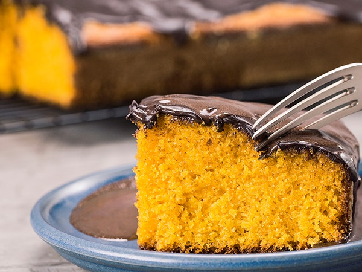
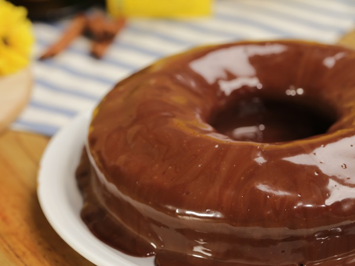
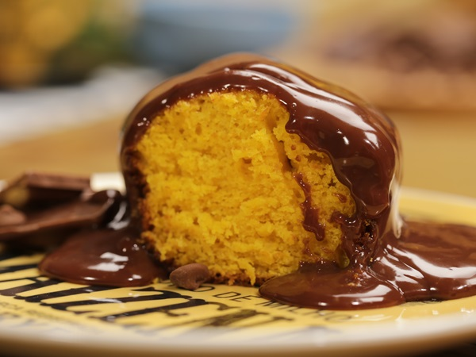
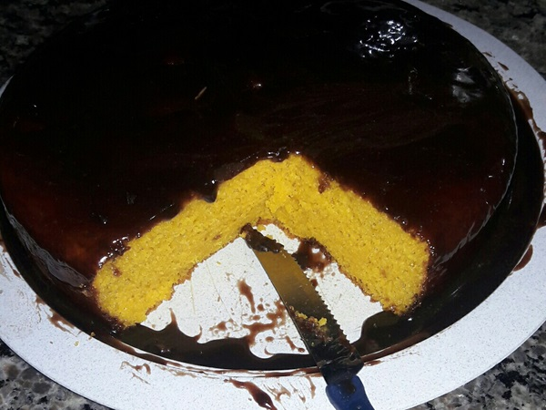
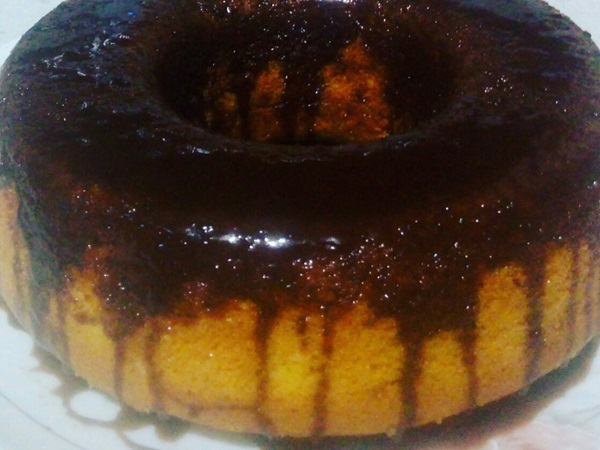

BOLO DE CENOURA FOFINHO
    
INGREDIENTES
MASSA:
- 2 cenouras médias, cortadas em cubos médios (250 g)
- 1/2 xícara (chá) de óleo
- 3 ovos
- 1/2 xícara (chá) de amido de milho MAIZENA®
- 1 e 1/2 xícara (chá) de farinha de trigo
- 1 colher (sopa) de fermento em pó
- 1 xícara (chá) de açúcar
COBERTURA:
- 1/2 xícara (chá) de chocolate ao leite derretido (ainda quente)
- 1/2 xícara (chá) de creme de leite
MODO DE PREPARO
1. Preaqueça o forno em temperatura média (180°C)
2. Unte e enfarinhe uma forma de furo central média (20 cm de diâmetro)
3. Reserve
4. No copo do liquidificador, coloque a cenoura, o óleo e os ovos, e bata até ficar homogêneo
5. Em uma tigela, peneire o amido de milho MAIZENA®, a farinha de trigo, o fermento e o açúcar, junte a mistura de cenoura reservada, e mexa com o auxílio de uma espátula até que vire uma massa uniforme
6.Disponha a massa na forma reservada e leve ao forno por 35 minutos, ou até que um palito, depois de espetado na massa, saia limpo
7.Retire do forno e deixe amornar
COBERTURA:
1. Misture o chocolate e o creme de leite, espalhe por toda a superfície do bolo e sirva a seguir
DICA:
1. Se preferir, utilize a forma redonda canelada (18 cm de diâmetro)
Fonte: http://www.tudogostoso.com.br/receita/188775-bolo-de-cenoura-fofinho.html